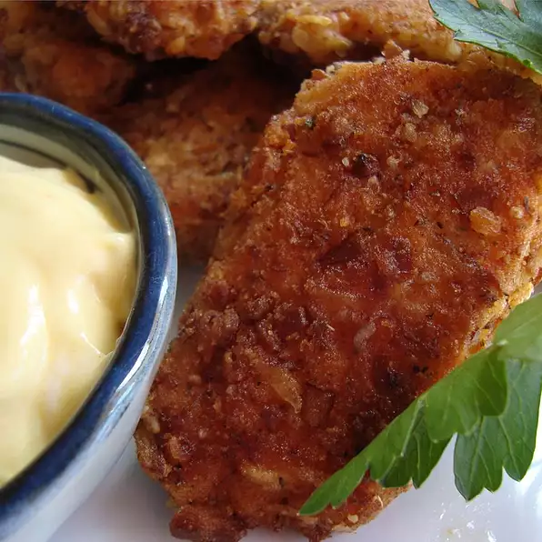

Pretzel Fried Chicken

IT'S FINGER LICKING GOOD
Get your ingredients and utensils ready because in just 30 minutes you'll
be able to cook the most succulent tender chicken there is.
INGREDIENTS
- ¼ cup all-purpose flour
- 2 eggs
- 1 cup finely crushed pretzels
- ¼ cup grated Parmesan cheese
- 2 teaspoons dried Italian erb seasoning
- 1 teaspoon ground cayenne pepper
- 1 teaspoon ground paprika
- 4 skinless, boneless chicken breast halves
- ¼ cup vegetable oil for frying
Steps
- Place the flour in a bowl, and set aside. Beat the eggs in another bowl.
Mix together the crushed pretzels, Parmesan cheese, Italian seasoning,
cayenne pepper, and paprika in a third bowl.
- Rinse the chicken breast halves, and pat them dry with paper towels.
Gently press the chicken breasts into the flour to coat, and shake
off the excess flour. Dip into the beaten egg, then press into the pretzel
crumb mixture. Gently toss between your hands so any crumbs that haven't
stuck can fall away. Place the breaded chicken breasts onto a plate while
breading the rest; do not stack.
- Heat the oil in a skillet over medium heat, and fry the coated chicken
breasts about 5 to 7 minutes per side, until the coating is golden brown
and the juices run clear.
Nutrition Facts
Per Serving:
- Calories=338
- Protein=27.6g
- Carbohydrates=31.2g
- Fat=16.6g
- Cholesterol=164.4mg
- Sodium=690.3mg